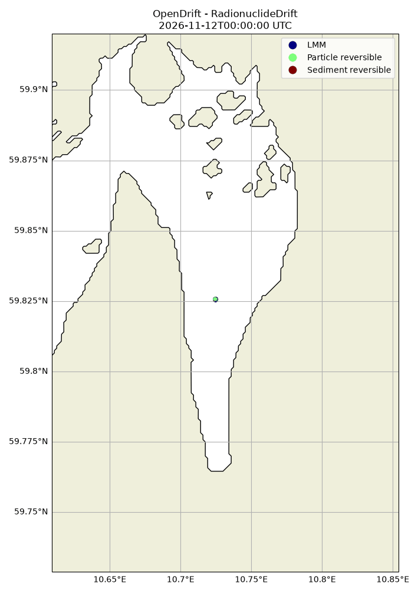

Note
Go to the end to download the full example code.
Radionuclides
from opendrift import test_data_folder as tdf
from opendrift.readers import reader_netCDF_CF_generic
from opendrift.models.radionuclides import RadionuclideDrift
from datetime import timedelta, datetime
import numpy as np
o = RadionuclideDrift(loglevel=20) # Set loglevel to 0 for debug information
# Norkyst
#reader_norkyst = reader_netCDF_CF_generic.Reader(tdf + '/14Jan2016_NorKyst_z_3d/NorKyst-800m_ZDEPTHS_his_00_3Dsubset.nc')
reader_norkyst = reader_netCDF_CF_generic.Reader('https://thredds.met.no/thredds/dodsC/fou-hi/norkystv3_800m_m00_be')
o.add_reader([reader_norkyst])
# Adjusting some configuration
o.set_config('drift:vertical_mixing', True)
#o.set_config('vertical_mixing:diffusivitymodel','constant') # include settling without vertical turbulent mixing
o.set_config('vertical_mixing:diffusivitymodel','environment') # apply vertical diffusivity from ocean model
# Vertical mixing requires fast time step
o.set_config('vertical_mixing:timestep', 600.) # seconds
o.set_config('environment:constant:horizontal_diffusivity', 10)
13:22:21 INFO opendrift:579: OpenDriftSimulation initialised (version 1.14.11 / v1.14.12-91-g231396a)
13:22:21 INFO opendrift.readers:67: Opening file with xr.open_dataset
13:22:30 INFO opendrift.readers.reader_netCDF_CF_generic:340: Detected dimensions: {'x': 'X', 'y': 'Y', 'z': 'depth', 'time': 'time'}
13:22:30 INFO opendrift.readers.basereader:175: Variable x_sea_water_velocity will be rotated from eastward_sea_water_velocity
13:22:30 INFO opendrift.readers.basereader:175: Variable y_sea_water_velocity will be rotated from northward_sea_water_velocity
13:22:30 INFO opendrift.readers.basereader:175: Variable x_wind will be rotated from eastward_wind
13:22:30 INFO opendrift.readers.basereader:175: Variable y_wind will be rotated from northward_wind
o.set_config('radionuclide:particle_diameter',5.e-6) # m
o.set_config('radionuclide:sediment:resuspension_depth',2.)
o.set_config('radionuclide:sediment:resuspension_depth_uncert',0.1)
o.set_config('radionuclide:sediment:resuspension_critvel',0.15)
o.set_config('radionuclide:isotope', '137Cs')
o.set_config('radionuclide:specie_setup','LMM + Rev')
# By default, radionuclides do not strand towards coastline
o.set_config('general:coastline_action', 'previous')
o.set_config('general:seafloor_action','lift_to_seafloor')
o.set_config('seed:LMM_fraction',.45)
o.set_config('seed:particle_fraction',.55)
# SEEDING
td=datetime.today()
time = datetime(td.year, td.month, td.day, 0)
lat = 59.825673
lon = 10.724714
ntraj=5000
iniz=np.random.rand(ntraj) * -10. # seeding the radionuclides in the upper 10m
o.seed_elements(lon, lat, z=iniz, radius=10, number=ntraj, time=time)
13:22:30 INFO opendrift.models.radionuclides:338: All good, isotop: 137Cs, species: LMM + Rev
13:22:30 INFO opendrift.models.radionuclides:273: Number of species: 3
13:22:30 INFO opendrift.models.radionuclides:275: 0 LMM
13:22:30 INFO opendrift.models.radionuclides:275: 1 Particle reversible
13:22:30 INFO opendrift.models.radionuclides:275: 2 Sediment reversible
ISOTOPE 137Cs
13:22:30 INFO opendrift.models.radionuclides:523: ISOTOPE 137Cs
13:22:30 INFO opendrift.models.radionuclides:524: SPECIE SETUP LMM + Rev
13:22:30 INFO opendrift.models.radionuclides:525: Kd: 4.0
13:22:30 INFO opendrift.models.radionuclides:418: Initial speciation:
13:22:30 INFO opendrift.models.radionuclides:420: 2238 0 LMM
13:22:30 INFO opendrift.models.radionuclides:420: 2762 1 Particle reversible
13:22:30 INFO opendrift.models.radionuclides:420: 0 2 Sediment reversible
13:22:30 INFO opendrift.models.radionuclides:440: PARTICLE DIAMETER 5e-06
13:22:30 INFO opendrift.models.radionuclides:452: Min: 4.62e-06, Max: 5.40e-06, Numer of particles seeded: 2762, at normal distribution
13:22:30 INFO opendrift.models.basemodel.environment:204: Adding a global landmask from GSHHG
13:22:37 INFO opendrift.models.basemodel.environment:238: Fallback values will be used for the following variables which have no readers:
13:22:37 INFO opendrift.models.basemodel.environment:241: ocean_mixed_layer_thickness: 50.000000
13:22:37 INFO opendrift.models.basemodel.environment:241: conc3: 0.001000
Running model
o.run(duration=timedelta(hours=48), time_step=1800, time_step_output=3600)
13:22:37 INFO opendrift:1932: Storing previous values of element property lon because of condition (('general:coastline_action', 'in', ['stranding', 'previous']), 'or', ('general:seafloor_action', 'in', ['previous']))
13:22:37 INFO opendrift:1932: Storing previous values of element property lat because of condition (('general:coastline_action', 'in', ['stranding', 'previous']), 'or', ('general:seafloor_action', 'in', ['previous']))
13:22:37 INFO opendrift:968: Using existing reader for land_binary_mask to move elements to ocean
13:22:37 INFO opendrift:1000: All points are in ocean
13:22:37 INFO opendrift.models.radionuclides:213: Number of species: 3
13:22:37 INFO opendrift.models.radionuclides:215: 0 LMM
13:22:37 INFO opendrift.models.radionuclides:215: 1 Particle reversible
13:22:37 INFO opendrift.models.radionuclides:215: 2 Sediment reversible
13:22:37 INFO opendrift.models.radionuclides:218: Isotope: 137Cs
13:22:37 INFO opendrift.models.radionuclides:219: specie setup: LMM + Rev
13:22:37 INFO opendrift.models.radionuclides:221: nspecies: 3
13:22:37 INFO opendrift.models.radionuclides:222: Transfer rates:
[[0.00000e+00 4.64000e-08 4.34304e-03]
[1.16000e-05 0.00000e+00 0.00000e+00]
[1.16000e-06 0.00000e+00 0.00000e+00]]
13:22:37 INFO opendrift.models.radionuclides:226: DEPTH_INTERVALS: [-25.0, -10.0, -5.0, -1.0]
13:22:37 INFO opendrift:2248: 2026-11-17 00:00:00 - step 1 of 96 - 5000 active elements (0 deactivated)
13:22:50 INFO opendrift.models.radionuclides:779: Number of transformations: 68
13:22:50 INFO opendrift.models.radionuclides:972: Number of resuspended particles: 0
13:22:50 INFO opendrift.models.radionuclides:1026: Speciation: [np.int64(2306), np.int64(2694), np.int64(0)] ['LMM', 'Particle reversible', 'Sediment reversible']
13:22:50 INFO opendrift:2248: 2026-11-17 00:30:00 - step 2 of 96 - 5000 active elements (0 deactivated)
13:23:03 INFO opendrift.models.radionuclides:779: Number of transformations: 51
13:23:03 INFO opendrift.models.radionuclides:972: Number of resuspended particles: 0
13:23:03 INFO opendrift.models.radionuclides:1026: Speciation: [np.int64(2357), np.int64(2643), np.int64(0)] ['LMM', 'Particle reversible', 'Sediment reversible']
13:23:03 INFO opendrift:2248: 2026-11-17 01:00:00 - step 3 of 96 - 5000 active elements (0 deactivated)
13:23:04 INFO opendrift.models.radionuclides:779: Number of transformations: 39
13:23:04 INFO opendrift.models.radionuclides:972: Number of resuspended particles: 0
13:23:04 INFO opendrift.models.radionuclides:1026: Speciation: [np.int64(2396), np.int64(2604), np.int64(0)] ['LMM', 'Particle reversible', 'Sediment reversible']
13:23:04 INFO opendrift:2248: 2026-11-17 01:30:00 - step 4 of 96 - 5000 active elements (0 deactivated)
13:23:17 INFO opendrift.models.radionuclides:779: Number of transformations: 64
13:23:17 INFO opendrift.models.radionuclides:972: Number of resuspended particles: 0
13:23:17 INFO opendrift.models.radionuclides:1026: Speciation: [np.int64(2456), np.int64(2544), np.int64(0)] ['LMM', 'Particle reversible', 'Sediment reversible']
13:23:17 INFO opendrift:2248: 2026-11-17 02:00:00 - step 5 of 96 - 5000 active elements (0 deactivated)
13:23:17 INFO opendrift.models.radionuclides:779: Number of transformations: 55
13:23:17 INFO opendrift.models.radionuclides:972: Number of resuspended particles: 0
13:23:17 INFO opendrift.models.radionuclides:1026: Speciation: [np.int64(2511), np.int64(2489), np.int64(0)] ['LMM', 'Particle reversible', 'Sediment reversible']
13:23:17 INFO opendrift:2248: 2026-11-17 02:30:00 - step 6 of 96 - 5000 active elements (0 deactivated)
13:23:33 INFO opendrift.models.radionuclides:779: Number of transformations: 50
13:23:33 INFO opendrift.models.radionuclides:972: Number of resuspended particles: 0
13:23:33 INFO opendrift.models.radionuclides:1026: Speciation: [np.int64(2561), np.int64(2439), np.int64(0)] ['LMM', 'Particle reversible', 'Sediment reversible']
13:23:33 INFO opendrift:2248: 2026-11-17 03:00:00 - step 7 of 96 - 5000 active elements (0 deactivated)
13:23:33 INFO opendrift.models.radionuclides:779: Number of transformations: 53
13:23:33 INFO opendrift.models.radionuclides:972: Number of resuspended particles: 0
13:23:33 INFO opendrift.models.radionuclides:1026: Speciation: [np.int64(2614), np.int64(2386), np.int64(0)] ['LMM', 'Particle reversible', 'Sediment reversible']
13:23:33 INFO opendrift:2248: 2026-11-17 03:30:00 - step 8 of 96 - 5000 active elements (0 deactivated)
13:23:46 INFO opendrift.models.radionuclides:779: Number of transformations: 59
13:23:46 INFO opendrift.models.radionuclides:972: Number of resuspended particles: 0
13:23:46 INFO opendrift.models.radionuclides:1026: Speciation: [np.int64(2671), np.int64(2329), np.int64(0)] ['LMM', 'Particle reversible', 'Sediment reversible']
13:23:46 INFO opendrift:2248: 2026-11-17 04:00:00 - step 9 of 96 - 5000 active elements (0 deactivated)
13:23:46 INFO opendrift.models.radionuclides:779: Number of transformations: 47
13:23:46 INFO opendrift.models.radionuclides:972: Number of resuspended particles: 0
13:23:46 INFO opendrift.models.radionuclides:1026: Speciation: [np.int64(2718), np.int64(2282), np.int64(0)] ['LMM', 'Particle reversible', 'Sediment reversible']
13:23:46 INFO opendrift:2248: 2026-11-17 04:30:00 - step 10 of 96 - 5000 active elements (0 deactivated)
13:23:58 INFO opendrift.models.radionuclides:779: Number of transformations: 54
13:23:58 INFO opendrift.models.radionuclides:972: Number of resuspended particles: 0
13:23:58 INFO opendrift.models.radionuclides:1026: Speciation: [np.int64(2772), np.int64(2228), np.int64(0)] ['LMM', 'Particle reversible', 'Sediment reversible']
13:23:58 INFO opendrift:2248: 2026-11-17 05:00:00 - step 11 of 96 - 5000 active elements (0 deactivated)
13:23:59 INFO opendrift.models.radionuclides:779: Number of transformations: 49
13:23:59 INFO opendrift.models.radionuclides:972: Number of resuspended particles: 0
13:23:59 INFO opendrift.models.radionuclides:1026: Speciation: [np.int64(2821), np.int64(2179), np.int64(0)] ['LMM', 'Particle reversible', 'Sediment reversible']
13:23:59 INFO opendrift:2248: 2026-11-17 05:30:00 - step 12 of 96 - 5000 active elements (0 deactivated)
13:24:12 INFO opendrift.models.radionuclides:779: Number of transformations: 56
13:24:12 INFO opendrift.models.radionuclides:972: Number of resuspended particles: 0
13:24:12 INFO opendrift.models.radionuclides:1026: Speciation: [np.int64(2875), np.int64(2125), np.int64(0)] ['LMM', 'Particle reversible', 'Sediment reversible']
13:24:12 INFO opendrift:2248: 2026-11-17 06:00:00 - step 13 of 96 - 5000 active elements (0 deactivated)
13:24:12 INFO opendrift.models.radionuclides:779: Number of transformations: 46
13:24:12 INFO opendrift.models.radionuclides:972: Number of resuspended particles: 0
13:24:12 INFO opendrift.models.radionuclides:1026: Speciation: [np.int64(2921), np.int64(2079), np.int64(0)] ['LMM', 'Particle reversible', 'Sediment reversible']
13:24:12 INFO opendrift:2248: 2026-11-17 06:30:00 - step 14 of 96 - 5000 active elements (0 deactivated)
13:24:25 INFO opendrift.models.radionuclides:779: Number of transformations: 30
13:24:25 INFO opendrift.models.radionuclides:972: Number of resuspended particles: 0
13:24:25 INFO opendrift.models.radionuclides:1026: Speciation: [np.int64(2951), np.int64(2049), np.int64(0)] ['LMM', 'Particle reversible', 'Sediment reversible']
13:24:25 INFO opendrift:2248: 2026-11-17 07:00:00 - step 15 of 96 - 5000 active elements (0 deactivated)
13:24:25 INFO opendrift.models.radionuclides:779: Number of transformations: 49
13:24:25 INFO opendrift.models.radionuclides:972: Number of resuspended particles: 0
13:24:25 INFO opendrift.models.radionuclides:1026: Speciation: [np.int64(3000), np.int64(2000), np.int64(0)] ['LMM', 'Particle reversible', 'Sediment reversible']
13:24:25 INFO opendrift:2248: 2026-11-17 07:30:00 - step 16 of 96 - 5000 active elements (0 deactivated)
13:24:40 INFO opendrift.models.radionuclides:779: Number of transformations: 40
13:24:40 INFO opendrift.models.radionuclides:972: Number of resuspended particles: 0
13:24:40 INFO opendrift.models.radionuclides:1026: Speciation: [np.int64(3038), np.int64(1961), np.int64(1)] ['LMM', 'Particle reversible', 'Sediment reversible']
13:24:40 INFO opendrift:2248: 2026-11-17 08:00:00 - step 17 of 96 - 5000 active elements (0 deactivated)
13:24:40 INFO opendrift.models.radionuclides:779: Number of transformations: 40
13:24:40 INFO opendrift.models.radionuclides:972: Number of resuspended particles: 0
13:24:40 INFO opendrift.models.radionuclides:1026: Speciation: [np.int64(3078), np.int64(1921), np.int64(1)] ['LMM', 'Particle reversible', 'Sediment reversible']
13:24:40 INFO opendrift:2248: 2026-11-17 08:30:00 - step 18 of 96 - 5000 active elements (0 deactivated)
13:24:52 INFO opendrift.models.radionuclides:779: Number of transformations: 34
13:24:52 INFO opendrift.models.radionuclides:972: Number of resuspended particles: 0
13:24:52 INFO opendrift.models.radionuclides:1026: Speciation: [np.int64(3112), np.int64(1887), np.int64(1)] ['LMM', 'Particle reversible', 'Sediment reversible']
13:24:52 INFO opendrift:2248: 2026-11-17 09:00:00 - step 19 of 96 - 5000 active elements (0 deactivated)
13:24:52 INFO opendrift.models.radionuclides:779: Number of transformations: 44
13:24:52 INFO opendrift.models.radionuclides:972: Number of resuspended particles: 0
13:24:52 INFO opendrift.models.radionuclides:1026: Speciation: [np.int64(3156), np.int64(1843), np.int64(1)] ['LMM', 'Particle reversible', 'Sediment reversible']
13:24:52 INFO opendrift:2248: 2026-11-17 09:30:00 - step 20 of 96 - 5000 active elements (0 deactivated)
13:25:05 INFO opendrift.models.radionuclides:779: Number of transformations: 41
13:25:05 INFO opendrift.models.radionuclides:972: Number of resuspended particles: 0
13:25:05 INFO opendrift.models.radionuclides:1026: Speciation: [np.int64(3197), np.int64(1802), np.int64(1)] ['LMM', 'Particle reversible', 'Sediment reversible']
13:25:05 INFO opendrift:2248: 2026-11-17 10:00:00 - step 21 of 96 - 5000 active elements (0 deactivated)
13:25:05 INFO opendrift.models.radionuclides:779: Number of transformations: 43
13:25:05 INFO opendrift.models.radionuclides:972: Number of resuspended particles: 0
13:25:05 INFO opendrift.models.radionuclides:1026: Speciation: [np.int64(3238), np.int64(1760), np.int64(2)] ['LMM', 'Particle reversible', 'Sediment reversible']
13:25:05 INFO opendrift:2248: 2026-11-17 10:30:00 - step 22 of 96 - 5000 active elements (0 deactivated)
13:25:19 INFO opendrift.models.radionuclides:779: Number of transformations: 47
13:25:19 INFO opendrift.models.radionuclides:972: Number of resuspended particles: 0
13:25:19 INFO opendrift.models.radionuclides:1026: Speciation: [np.int64(3285), np.int64(1713), np.int64(2)] ['LMM', 'Particle reversible', 'Sediment reversible']
13:25:19 INFO opendrift:2248: 2026-11-17 11:00:00 - step 23 of 96 - 5000 active elements (0 deactivated)
13:25:19 INFO opendrift.models.radionuclides:779: Number of transformations: 35
13:25:19 INFO opendrift.models.radionuclides:972: Number of resuspended particles: 0
13:25:19 INFO opendrift.models.radionuclides:1026: Speciation: [np.int64(3318), np.int64(1679), np.int64(3)] ['LMM', 'Particle reversible', 'Sediment reversible']
13:25:19 INFO opendrift:2248: 2026-11-17 11:30:00 - step 24 of 96 - 5000 active elements (0 deactivated)
13:25:33 INFO opendrift.models.radionuclides:779: Number of transformations: 26
13:25:33 INFO opendrift.models.radionuclides:972: Number of resuspended particles: 0
13:25:33 INFO opendrift.models.radionuclides:1026: Speciation: [np.int64(3340), np.int64(1656), np.int64(4)] ['LMM', 'Particle reversible', 'Sediment reversible']
13:25:33 INFO opendrift:2248: 2026-11-17 12:00:00 - step 25 of 96 - 5000 active elements (0 deactivated)
13:25:34 INFO opendrift.models.radionuclides:779: Number of transformations: 41
13:25:34 INFO opendrift.models.radionuclides:972: Number of resuspended particles: 0
13:25:34 INFO opendrift.models.radionuclides:1026: Speciation: [np.int64(3379), np.int64(1616), np.int64(5)] ['LMM', 'Particle reversible', 'Sediment reversible']
13:25:34 INFO opendrift:2248: 2026-11-17 12:30:00 - step 26 of 96 - 5000 active elements (0 deactivated)
13:25:47 INFO opendrift.models.radionuclides:779: Number of transformations: 31
13:25:47 INFO opendrift.models.radionuclides:972: Number of resuspended particles: 0
13:25:47 INFO opendrift.models.radionuclides:1026: Speciation: [np.int64(3406), np.int64(1588), np.int64(6)] ['LMM', 'Particle reversible', 'Sediment reversible']
13:25:47 INFO opendrift:2248: 2026-11-17 13:00:00 - step 27 of 96 - 5000 active elements (0 deactivated)
13:25:47 INFO opendrift.models.radionuclides:779: Number of transformations: 42
13:25:47 INFO opendrift.models.radionuclides:972: Number of resuspended particles: 0
13:25:47 INFO opendrift.models.radionuclides:1026: Speciation: [np.int64(3442), np.int64(1551), np.int64(7)] ['LMM', 'Particle reversible', 'Sediment reversible']
13:25:47 INFO opendrift:2248: 2026-11-17 13:30:00 - step 28 of 96 - 5000 active elements (0 deactivated)
13:25:59 INFO opendrift.models.radionuclides:779: Number of transformations: 31
13:25:59 INFO opendrift.models.radionuclides:972: Number of resuspended particles: 0
13:25:59 INFO opendrift.models.radionuclides:1026: Speciation: [np.int64(3467), np.int64(1524), np.int64(9)] ['LMM', 'Particle reversible', 'Sediment reversible']
13:25:59 INFO opendrift:2248: 2026-11-17 14:00:00 - step 29 of 96 - 5000 active elements (0 deactivated)
13:25:59 INFO opendrift.models.radionuclides:779: Number of transformations: 44
13:25:59 INFO opendrift.models.radionuclides:972: Number of resuspended particles: 0
13:25:59 INFO opendrift.models.radionuclides:1026: Speciation: [np.int64(3509), np.int64(1481), np.int64(10)] ['LMM', 'Particle reversible', 'Sediment reversible']
13:25:59 INFO opendrift:2248: 2026-11-17 14:30:00 - step 30 of 96 - 5000 active elements (0 deactivated)
13:26:14 INFO opendrift.models.radionuclides:779: Number of transformations: 25
13:26:14 INFO opendrift.models.radionuclides:972: Number of resuspended particles: 0
13:26:14 INFO opendrift.models.radionuclides:1026: Speciation: [np.int64(3534), np.int64(1456), np.int64(10)] ['LMM', 'Particle reversible', 'Sediment reversible']
13:26:14 INFO opendrift:2248: 2026-11-17 15:00:00 - step 31 of 96 - 5000 active elements (0 deactivated)
13:26:15 INFO opendrift.models.radionuclides:779: Number of transformations: 28
13:26:15 INFO opendrift.models.radionuclides:972: Number of resuspended particles: 0
13:26:15 INFO opendrift.models.radionuclides:1026: Speciation: [np.int64(3560), np.int64(1429), np.int64(11)] ['LMM', 'Particle reversible', 'Sediment reversible']
13:26:15 INFO opendrift:2248: 2026-11-17 15:30:00 - step 32 of 96 - 5000 active elements (0 deactivated)
13:26:30 INFO opendrift.models.radionuclides:779: Number of transformations: 25
13:26:30 INFO opendrift.models.radionuclides:972: Number of resuspended particles: 0
13:26:30 INFO opendrift.models.radionuclides:1026: Speciation: [np.int64(3583), np.int64(1406), np.int64(11)] ['LMM', 'Particle reversible', 'Sediment reversible']
13:26:30 INFO opendrift:2248: 2026-11-17 16:00:00 - step 33 of 96 - 5000 active elements (0 deactivated)
13:26:30 INFO opendrift.models.radionuclides:779: Number of transformations: 32
13:26:30 INFO opendrift.models.radionuclides:972: Number of resuspended particles: 0
13:26:30 INFO opendrift.models.radionuclides:1026: Speciation: [np.int64(3613), np.int64(1375), np.int64(12)] ['LMM', 'Particle reversible', 'Sediment reversible']
13:26:30 INFO opendrift:2248: 2026-11-17 16:30:00 - step 34 of 96 - 5000 active elements (0 deactivated)
13:26:42 INFO opendrift.models.radionuclides:779: Number of transformations: 32
13:26:42 INFO opendrift.models.radionuclides:972: Number of resuspended particles: 0
13:26:42 INFO opendrift.models.radionuclides:1026: Speciation: [np.int64(3643), np.int64(1345), np.int64(12)] ['LMM', 'Particle reversible', 'Sediment reversible']
13:26:42 INFO opendrift:2248: 2026-11-17 17:00:00 - step 35 of 96 - 5000 active elements (0 deactivated)
13:26:42 INFO opendrift.models.radionuclides:779: Number of transformations: 32
13:26:42 INFO opendrift.models.radionuclides:972: Number of resuspended particles: 0
13:26:42 INFO opendrift.models.radionuclides:1026: Speciation: [np.int64(3667), np.int64(1317), np.int64(16)] ['LMM', 'Particle reversible', 'Sediment reversible']
13:26:42 INFO opendrift:2248: 2026-11-17 17:30:00 - step 36 of 96 - 5000 active elements (0 deactivated)
13:26:53 INFO opendrift.models.radionuclides:779: Number of transformations: 30
13:26:53 INFO opendrift.models.radionuclides:972: Number of resuspended particles: 0
13:26:53 INFO opendrift.models.radionuclides:1026: Speciation: [np.int64(3695), np.int64(1288), np.int64(17)] ['LMM', 'Particle reversible', 'Sediment reversible']
13:26:53 INFO opendrift:2248: 2026-11-17 18:00:00 - step 37 of 96 - 5000 active elements (0 deactivated)
13:26:53 INFO opendrift.models.radionuclides:779: Number of transformations: 29
13:26:53 INFO opendrift.models.radionuclides:972: Number of resuspended particles: 0
13:26:53 INFO opendrift.models.radionuclides:1026: Speciation: [np.int64(3722), np.int64(1260), np.int64(18)] ['LMM', 'Particle reversible', 'Sediment reversible']
13:26:54 INFO opendrift:2248: 2026-11-17 18:30:00 - step 38 of 96 - 5000 active elements (0 deactivated)
13:27:06 INFO opendrift.models.radionuclides:779: Number of transformations: 24
13:27:06 INFO opendrift.models.radionuclides:972: Number of resuspended particles: 0
13:27:06 INFO opendrift.models.radionuclides:1026: Speciation: [np.int64(3738), np.int64(1240), np.int64(22)] ['LMM', 'Particle reversible', 'Sediment reversible']
13:27:06 INFO opendrift:2248: 2026-11-17 19:00:00 - step 39 of 96 - 5000 active elements (0 deactivated)
13:27:06 INFO opendrift.models.radionuclides:779: Number of transformations: 31
13:27:06 INFO opendrift.models.radionuclides:972: Number of resuspended particles: 0
13:27:06 INFO opendrift.models.radionuclides:1026: Speciation: [np.int64(3767), np.int64(1212), np.int64(21)] ['LMM', 'Particle reversible', 'Sediment reversible']
13:27:06 INFO opendrift:2248: 2026-11-17 19:30:00 - step 40 of 96 - 5000 active elements (0 deactivated)
13:27:20 INFO opendrift.models.radionuclides:779: Number of transformations: 24
13:27:20 INFO opendrift.models.radionuclides:972: Number of resuspended particles: 0
13:27:20 INFO opendrift.models.radionuclides:1026: Speciation: [np.int64(3791), np.int64(1188), np.int64(21)] ['LMM', 'Particle reversible', 'Sediment reversible']
13:27:20 INFO opendrift:2248: 2026-11-17 20:00:00 - step 41 of 96 - 5000 active elements (0 deactivated)
13:27:20 INFO opendrift.models.radionuclides:779: Number of transformations: 23
13:27:20 INFO opendrift.models.radionuclides:972: Number of resuspended particles: 0
13:27:20 INFO opendrift.models.radionuclides:1026: Speciation: [np.int64(3812), np.int64(1167), np.int64(21)] ['LMM', 'Particle reversible', 'Sediment reversible']
13:27:20 INFO opendrift:2248: 2026-11-17 20:30:00 - step 42 of 96 - 5000 active elements (0 deactivated)
13:27:37 INFO opendrift.models.radionuclides:779: Number of transformations: 29
13:27:37 INFO opendrift.models.radionuclides:972: Number of resuspended particles: 0
13:27:37 INFO opendrift.models.radionuclides:1026: Speciation: [np.int64(3837), np.int64(1141), np.int64(22)] ['LMM', 'Particle reversible', 'Sediment reversible']
13:27:37 INFO opendrift:2248: 2026-11-17 21:00:00 - step 43 of 96 - 5000 active elements (0 deactivated)
13:27:37 INFO opendrift.models.radionuclides:779: Number of transformations: 23
13:27:37 INFO opendrift.models.radionuclides:972: Number of resuspended particles: 0
13:27:37 INFO opendrift.models.radionuclides:1026: Speciation: [np.int64(3860), np.int64(1118), np.int64(22)] ['LMM', 'Particle reversible', 'Sediment reversible']
13:27:37 INFO opendrift:2248: 2026-11-17 21:30:00 - step 44 of 96 - 5000 active elements (0 deactivated)
13:27:50 INFO opendrift.models.radionuclides:779: Number of transformations: 22
13:27:50 INFO opendrift.models.radionuclides:972: Number of resuspended particles: 0
13:27:50 INFO opendrift.models.radionuclides:1026: Speciation: [np.int64(3880), np.int64(1097), np.int64(23)] ['LMM', 'Particle reversible', 'Sediment reversible']
13:27:50 INFO opendrift:2248: 2026-11-17 22:00:00 - step 45 of 96 - 5000 active elements (0 deactivated)
13:27:51 INFO opendrift.models.radionuclides:779: Number of transformations: 26
13:27:51 INFO opendrift.models.radionuclides:972: Number of resuspended particles: 0
13:27:51 INFO opendrift.models.radionuclides:1026: Speciation: [np.int64(3904), np.int64(1072), np.int64(24)] ['LMM', 'Particle reversible', 'Sediment reversible']
13:27:51 INFO opendrift:2248: 2026-11-17 22:30:00 - step 46 of 96 - 5000 active elements (0 deactivated)
13:28:03 INFO opendrift.models.radionuclides:779: Number of transformations: 26
13:28:03 INFO opendrift.models.radionuclides:972: Number of resuspended particles: 0
13:28:03 INFO opendrift.models.radionuclides:1026: Speciation: [np.int64(3922), np.int64(1052), np.int64(26)] ['LMM', 'Particle reversible', 'Sediment reversible']
13:28:03 INFO opendrift:2248: 2026-11-17 23:00:00 - step 47 of 96 - 5000 active elements (0 deactivated)
13:28:04 INFO opendrift.models.radionuclides:779: Number of transformations: 23
13:28:04 INFO opendrift.models.radionuclides:972: Number of resuspended particles: 0
13:28:04 INFO opendrift.models.radionuclides:1026: Speciation: [np.int64(3941), np.int64(1031), np.int64(28)] ['LMM', 'Particle reversible', 'Sediment reversible']
13:28:04 INFO opendrift:2248: 2026-11-17 23:30:00 - step 48 of 96 - 5000 active elements (0 deactivated)
13:28:16 INFO opendrift.models.radionuclides:779: Number of transformations: 19
13:28:16 INFO opendrift.models.radionuclides:972: Number of resuspended particles: 0
13:28:16 INFO opendrift.models.radionuclides:1026: Speciation: [np.int64(3956), np.int64(1015), np.int64(29)] ['LMM', 'Particle reversible', 'Sediment reversible']
13:28:16 INFO opendrift:2248: 2026-11-18 00:00:00 - step 49 of 96 - 5000 active elements (0 deactivated)
13:28:16 INFO opendrift.models.radionuclides:779: Number of transformations: 29
13:28:16 INFO opendrift.models.radionuclides:972: Number of resuspended particles: 0
13:28:16 INFO opendrift.models.radionuclides:1026: Speciation: [np.int64(3979), np.int64(989), np.int64(32)] ['LMM', 'Particle reversible', 'Sediment reversible']
13:28:16 INFO opendrift:2248: 2026-11-18 00:30:00 - step 50 of 96 - 5000 active elements (0 deactivated)
13:28:35 INFO opendrift.models.radionuclides:779: Number of transformations: 24
13:28:35 INFO opendrift.models.radionuclides:972: Number of resuspended particles: 0
13:28:35 INFO opendrift.models.radionuclides:1026: Speciation: [np.int64(3995), np.int64(970), np.int64(35)] ['LMM', 'Particle reversible', 'Sediment reversible']
13:28:35 INFO opendrift:2248: 2026-11-18 01:00:00 - step 51 of 96 - 5000 active elements (0 deactivated)
13:28:35 INFO opendrift.models.radionuclides:779: Number of transformations: 17
13:28:35 INFO opendrift.models.radionuclides:972: Number of resuspended particles: 0
13:28:35 INFO opendrift.models.radionuclides:1026: Speciation: [np.int64(4008), np.int64(955), np.int64(37)] ['LMM', 'Particle reversible', 'Sediment reversible']
13:28:35 INFO opendrift:2248: 2026-11-18 01:30:00 - step 52 of 96 - 5000 active elements (0 deactivated)
13:28:50 INFO opendrift.models.radionuclides:779: Number of transformations: 17
13:28:50 INFO opendrift.models.radionuclides:972: Number of resuspended particles: 0
13:28:50 INFO opendrift.models.radionuclides:1026: Speciation: [np.int64(4021), np.int64(940), np.int64(39)] ['LMM', 'Particle reversible', 'Sediment reversible']
13:28:50 INFO opendrift:2248: 2026-11-18 02:00:00 - step 53 of 96 - 5000 active elements (0 deactivated)
13:28:50 INFO opendrift.models.radionuclides:779: Number of transformations: 18
13:28:50 INFO opendrift.models.radionuclides:972: Number of resuspended particles: 0
13:28:50 INFO opendrift.models.radionuclides:1026: Speciation: [np.int64(4027), np.int64(929), np.int64(44)] ['LMM', 'Particle reversible', 'Sediment reversible']
13:28:50 INFO opendrift:2248: 2026-11-18 02:30:00 - step 54 of 96 - 5000 active elements (0 deactivated)
13:29:05 INFO opendrift.models.radionuclides:779: Number of transformations: 19
13:29:05 INFO opendrift.models.radionuclides:972: Number of resuspended particles: 0
13:29:05 INFO opendrift.models.radionuclides:1026: Speciation: [np.int64(4044), np.int64(911), np.int64(45)] ['LMM', 'Particle reversible', 'Sediment reversible']
13:29:05 INFO opendrift:2248: 2026-11-18 03:00:00 - step 55 of 96 - 5000 active elements (0 deactivated)
13:29:05 INFO opendrift.models.radionuclides:779: Number of transformations: 25
13:29:05 INFO opendrift.models.radionuclides:972: Number of resuspended particles: 0
13:29:05 INFO opendrift.models.radionuclides:1026: Speciation: [np.int64(4057), np.int64(893), np.int64(50)] ['LMM', 'Particle reversible', 'Sediment reversible']
13:29:05 INFO opendrift:2248: 2026-11-18 03:30:00 - step 56 of 96 - 5000 active elements (0 deactivated)
13:29:20 INFO opendrift.models.radionuclides:779: Number of transformations: 17
13:29:20 INFO opendrift.models.radionuclides:972: Number of resuspended particles: 0
13:29:20 INFO opendrift.models.radionuclides:1026: Speciation: [np.int64(4072), np.int64(877), np.int64(51)] ['LMM', 'Particle reversible', 'Sediment reversible']
13:29:20 INFO opendrift:2248: 2026-11-18 04:00:00 - step 57 of 96 - 5000 active elements (0 deactivated)
13:29:20 INFO opendrift.models.radionuclides:779: Number of transformations: 18
13:29:20 INFO opendrift.models.radionuclides:972: Number of resuspended particles: 0
13:29:20 INFO opendrift.models.radionuclides:1026: Speciation: [np.int64(4084), np.int64(862), np.int64(54)] ['LMM', 'Particle reversible', 'Sediment reversible']
13:29:20 INFO opendrift:2248: 2026-11-18 04:30:00 - step 58 of 96 - 5000 active elements (0 deactivated)
13:29:36 INFO opendrift.models.radionuclides:779: Number of transformations: 16
13:29:36 INFO opendrift.models.radionuclides:972: Number of resuspended particles: 0
13:29:36 INFO opendrift.models.radionuclides:1026: Speciation: [np.int64(4098), np.int64(847), np.int64(55)] ['LMM', 'Particle reversible', 'Sediment reversible']
13:29:36 INFO opendrift:2248: 2026-11-18 05:00:00 - step 59 of 96 - 5000 active elements (0 deactivated)
13:29:36 INFO opendrift.models.radionuclides:779: Number of transformations: 27
13:29:36 INFO opendrift.models.radionuclides:972: Number of resuspended particles: 0
13:29:36 INFO opendrift.models.radionuclides:1026: Speciation: [np.int64(4115), np.int64(825), np.int64(60)] ['LMM', 'Particle reversible', 'Sediment reversible']
13:29:36 INFO opendrift:2248: 2026-11-18 05:30:00 - step 60 of 96 - 5000 active elements (0 deactivated)
13:29:51 INFO opendrift.models.radionuclides:779: Number of transformations: 25
13:29:51 INFO opendrift.models.radionuclides:972: Number of resuspended particles: 0
13:29:51 INFO opendrift.models.radionuclides:1026: Speciation: [np.int64(4132), np.int64(804), np.int64(64)] ['LMM', 'Particle reversible', 'Sediment reversible']
13:29:51 INFO opendrift:2248: 2026-11-18 06:00:00 - step 61 of 96 - 5000 active elements (0 deactivated)
13:29:51 INFO opendrift.models.radionuclides:779: Number of transformations: 27
13:29:51 INFO opendrift.models.radionuclides:972: Number of resuspended particles: 0
13:29:51 INFO opendrift.models.radionuclides:1026: Speciation: [np.int64(4155), np.int64(779), np.int64(66)] ['LMM', 'Particle reversible', 'Sediment reversible']
13:29:51 INFO opendrift:2248: 2026-11-18 06:30:00 - step 62 of 96 - 5000 active elements (0 deactivated)
13:30:08 INFO opendrift.models.radionuclides:779: Number of transformations: 17
13:30:08 INFO opendrift.models.radionuclides:972: Number of resuspended particles: 0
13:30:08 INFO opendrift.models.radionuclides:1026: Speciation: [np.int64(4172), np.int64(762), np.int64(66)] ['LMM', 'Particle reversible', 'Sediment reversible']
13:30:08 INFO opendrift:2248: 2026-11-18 07:00:00 - step 63 of 96 - 5000 active elements (0 deactivated)
13:30:08 INFO opendrift.models.radionuclides:779: Number of transformations: 21
13:30:08 INFO opendrift.models.radionuclides:972: Number of resuspended particles: 0
13:30:08 INFO opendrift.models.radionuclides:1026: Speciation: [np.int64(4183), np.int64(746), np.int64(71)] ['LMM', 'Particle reversible', 'Sediment reversible']
13:30:08 INFO opendrift:2248: 2026-11-18 07:30:00 - step 64 of 96 - 5000 active elements (0 deactivated)
13:30:25 INFO opendrift.models.radionuclides:779: Number of transformations: 15
13:30:25 INFO opendrift.models.radionuclides:972: Number of resuspended particles: 0
13:30:25 INFO opendrift.models.radionuclides:1026: Speciation: [np.int64(4192), np.int64(734), np.int64(74)] ['LMM', 'Particle reversible', 'Sediment reversible']
13:30:25 INFO opendrift:2248: 2026-11-18 08:00:00 - step 65 of 96 - 5000 active elements (0 deactivated)
13:30:25 INFO opendrift.models.radionuclides:779: Number of transformations: 18
13:30:25 INFO opendrift.models.radionuclides:972: Number of resuspended particles: 0
13:30:25 INFO opendrift.models.radionuclides:1026: Speciation: [np.int64(4204), np.int64(720), np.int64(76)] ['LMM', 'Particle reversible', 'Sediment reversible']
13:30:25 INFO opendrift:2248: 2026-11-18 08:30:00 - step 66 of 96 - 5000 active elements (0 deactivated)
13:30:41 INFO opendrift.models.radionuclides:779: Number of transformations: 14
13:30:41 INFO opendrift.models.radionuclides:972: Number of resuspended particles: 0
13:30:41 INFO opendrift.models.radionuclides:1026: Speciation: [np.int64(4216), np.int64(707), np.int64(77)] ['LMM', 'Particle reversible', 'Sediment reversible']
13:30:41 INFO opendrift:2248: 2026-11-18 09:00:00 - step 67 of 96 - 5000 active elements (0 deactivated)
13:30:41 INFO opendrift.models.radionuclides:779: Number of transformations: 23
13:30:41 INFO opendrift.models.radionuclides:972: Number of resuspended particles: 0
13:30:41 INFO opendrift.models.radionuclides:1026: Speciation: [np.int64(4231), np.int64(690), np.int64(79)] ['LMM', 'Particle reversible', 'Sediment reversible']
13:30:41 INFO opendrift:2248: 2026-11-18 09:30:00 - step 68 of 96 - 5000 active elements (0 deactivated)
13:30:58 INFO opendrift.models.radionuclides:779: Number of transformations: 14
13:30:58 INFO opendrift.models.radionuclides:972: Number of resuspended particles: 0
13:30:58 INFO opendrift.models.radionuclides:1026: Speciation: [np.int64(4241), np.int64(678), np.int64(81)] ['LMM', 'Particle reversible', 'Sediment reversible']
13:30:58 INFO opendrift:2248: 2026-11-18 10:00:00 - step 69 of 96 - 5000 active elements (0 deactivated)
13:30:59 INFO opendrift.models.radionuclides:779: Number of transformations: 13
13:30:59 INFO opendrift.models.radionuclides:972: Number of resuspended particles: 0
13:30:59 INFO opendrift.models.radionuclides:1026: Speciation: [np.int64(4248), np.int64(668), np.int64(84)] ['LMM', 'Particle reversible', 'Sediment reversible']
13:30:59 INFO opendrift:2248: 2026-11-18 10:30:00 - step 70 of 96 - 5000 active elements (0 deactivated)
13:31:13 INFO opendrift.models.radionuclides:779: Number of transformations: 16
13:31:13 INFO opendrift.models.radionuclides:972: Number of resuspended particles: 0
13:31:13 INFO opendrift.models.radionuclides:1026: Speciation: [np.int64(4262), np.int64(653), np.int64(85)] ['LMM', 'Particle reversible', 'Sediment reversible']
13:31:13 INFO opendrift:2248: 2026-11-18 11:00:00 - step 71 of 96 - 5000 active elements (0 deactivated)
13:31:14 INFO opendrift.models.radionuclides:779: Number of transformations: 22
13:31:14 INFO opendrift.models.radionuclides:972: Number of resuspended particles: 0
13:31:14 INFO opendrift.models.radionuclides:1026: Speciation: [np.int64(4272), np.int64(638), np.int64(90)] ['LMM', 'Particle reversible', 'Sediment reversible']
13:31:14 INFO opendrift:2248: 2026-11-18 11:30:00 - step 72 of 96 - 5000 active elements (0 deactivated)
13:31:28 INFO opendrift.models.radionuclides:779: Number of transformations: 16
13:31:28 INFO opendrift.models.radionuclides:972: Number of resuspended particles: 0
13:31:28 INFO opendrift.models.radionuclides:1026: Speciation: [np.int64(4274), np.int64(630), np.int64(96)] ['LMM', 'Particle reversible', 'Sediment reversible']
13:31:28 INFO opendrift:2248: 2026-11-18 12:00:00 - step 73 of 96 - 5000 active elements (0 deactivated)
13:31:28 INFO opendrift.models.radionuclides:779: Number of transformations: 13
13:31:28 INFO opendrift.models.radionuclides:972: Number of resuspended particles: 0
13:31:28 INFO opendrift.models.radionuclides:1026: Speciation: [np.int64(4281), np.int64(621), np.int64(98)] ['LMM', 'Particle reversible', 'Sediment reversible']
13:31:28 INFO opendrift:2248: 2026-11-18 12:30:00 - step 74 of 96 - 5000 active elements (0 deactivated)
13:31:42 INFO opendrift.models.radionuclides:779: Number of transformations: 12
13:31:42 INFO opendrift.models.radionuclides:972: Number of resuspended particles: 0
13:31:42 INFO opendrift.models.radionuclides:1026: Speciation: [np.int64(4281), np.int64(615), np.int64(104)] ['LMM', 'Particle reversible', 'Sediment reversible']
13:31:42 INFO opendrift:2248: 2026-11-18 13:00:00 - step 75 of 96 - 5000 active elements (0 deactivated)
13:31:42 INFO opendrift.models.radionuclides:779: Number of transformations: 19
13:31:42 INFO opendrift.models.radionuclides:972: Number of resuspended particles: 0
13:31:42 INFO opendrift.models.radionuclides:1026: Speciation: [np.int64(4284), np.int64(604), np.int64(112)] ['LMM', 'Particle reversible', 'Sediment reversible']
13:31:42 INFO opendrift:2248: 2026-11-18 13:30:00 - step 76 of 96 - 5000 active elements (0 deactivated)
13:31:57 INFO opendrift.models.radionuclides:779: Number of transformations: 13
13:31:57 INFO opendrift.models.radionuclides:972: Number of resuspended particles: 0
13:31:57 INFO opendrift.models.radionuclides:1026: Speciation: [np.int64(4289), np.int64(596), np.int64(115)] ['LMM', 'Particle reversible', 'Sediment reversible']
13:31:57 INFO opendrift:2248: 2026-11-18 14:00:00 - step 77 of 96 - 5000 active elements (0 deactivated)
13:31:57 INFO opendrift.models.radionuclides:779: Number of transformations: 15
13:31:57 INFO opendrift.models.radionuclides:972: Number of resuspended particles: 0
13:31:57 INFO opendrift.models.radionuclides:1026: Speciation: [np.int64(4294), np.int64(587), np.int64(119)] ['LMM', 'Particle reversible', 'Sediment reversible']
13:31:57 INFO opendrift:2248: 2026-11-18 14:30:00 - step 78 of 96 - 5000 active elements (0 deactivated)
13:32:10 INFO opendrift.models.radionuclides:779: Number of transformations: 21
13:32:10 INFO opendrift.models.radionuclides:972: Number of resuspended particles: 0
13:32:10 INFO opendrift.models.radionuclides:1026: Speciation: [np.int64(4293), np.int64(578), np.int64(129)] ['LMM', 'Particle reversible', 'Sediment reversible']
13:32:10 INFO opendrift:2248: 2026-11-18 15:00:00 - step 79 of 96 - 5000 active elements (0 deactivated)
13:32:11 INFO opendrift.models.radionuclides:779: Number of transformations: 15
13:32:11 INFO opendrift.models.radionuclides:972: Number of resuspended particles: 0
13:32:11 INFO opendrift.models.radionuclides:1026: Speciation: [np.int64(4298), np.int64(568), np.int64(134)] ['LMM', 'Particle reversible', 'Sediment reversible']
13:32:11 INFO opendrift:2248: 2026-11-18 15:30:00 - step 80 of 96 - 5000 active elements (0 deactivated)
13:32:22 INFO opendrift.models.radionuclides:779: Number of transformations: 16
13:32:22 INFO opendrift.models.radionuclides:972: Number of resuspended particles: 0
13:32:22 INFO opendrift.models.radionuclides:1026: Speciation: [np.int64(4304), np.int64(557), np.int64(139)] ['LMM', 'Particle reversible', 'Sediment reversible']
13:32:22 INFO opendrift:2248: 2026-11-18 16:00:00 - step 81 of 96 - 5000 active elements (0 deactivated)
13:32:22 INFO opendrift.models.radionuclides:779: Number of transformations: 22
13:32:22 INFO opendrift.models.radionuclides:972: Number of resuspended particles: 0
13:32:22 INFO opendrift.models.radionuclides:1026: Speciation: [np.int64(4316), np.int64(541), np.int64(143)] ['LMM', 'Particle reversible', 'Sediment reversible']
13:32:22 INFO opendrift:2248: 2026-11-18 16:30:00 - step 82 of 96 - 5000 active elements (0 deactivated)
13:32:37 INFO opendrift.models.radionuclides:779: Number of transformations: 22
13:32:37 INFO opendrift.models.radionuclides:972: Number of resuspended particles: 0
13:32:37 INFO opendrift.models.radionuclides:1026: Speciation: [np.int64(4332), np.int64(522), np.int64(146)] ['LMM', 'Particle reversible', 'Sediment reversible']
13:32:37 INFO opendrift:2248: 2026-11-18 17:00:00 - step 83 of 96 - 5000 active elements (0 deactivated)
13:32:37 INFO opendrift.models.radionuclides:779: Number of transformations: 20
13:32:37 INFO opendrift.models.radionuclides:972: Number of resuspended particles: 0
13:32:37 INFO opendrift.models.radionuclides:1026: Speciation: [np.int64(4342), np.int64(508), np.int64(150)] ['LMM', 'Particle reversible', 'Sediment reversible']
13:32:37 INFO opendrift:2248: 2026-11-18 17:30:00 - step 84 of 96 - 5000 active elements (0 deactivated)
13:32:50 INFO opendrift.models.radionuclides:779: Number of transformations: 20
13:32:50 INFO opendrift.models.radionuclides:972: Number of resuspended particles: 0
13:32:50 INFO opendrift.models.radionuclides:1026: Speciation: [np.int64(4352), np.int64(493), np.int64(155)] ['LMM', 'Particle reversible', 'Sediment reversible']
13:32:50 INFO opendrift:2248: 2026-11-18 18:00:00 - step 85 of 96 - 5000 active elements (0 deactivated)
13:32:50 INFO opendrift.models.radionuclides:779: Number of transformations: 9
13:32:50 INFO opendrift.models.radionuclides:972: Number of resuspended particles: 0
13:32:50 INFO opendrift.models.radionuclides:1026: Speciation: [np.int64(4357), np.int64(486), np.int64(157)] ['LMM', 'Particle reversible', 'Sediment reversible']
13:32:50 INFO opendrift:2248: 2026-11-18 18:30:00 - step 86 of 96 - 5000 active elements (0 deactivated)
13:33:03 INFO opendrift.models.radionuclides:779: Number of transformations: 11
13:33:03 INFO opendrift.models.radionuclides:972: Number of resuspended particles: 0
13:33:03 INFO opendrift.models.radionuclides:1026: Speciation: [np.int64(4364), np.int64(477), np.int64(159)] ['LMM', 'Particle reversible', 'Sediment reversible']
13:33:03 INFO opendrift:2248: 2026-11-18 19:00:00 - step 87 of 96 - 5000 active elements (0 deactivated)
13:33:04 INFO opendrift.models.radionuclides:779: Number of transformations: 15
13:33:04 INFO opendrift.models.radionuclides:972: Number of resuspended particles: 0
13:33:04 INFO opendrift.models.radionuclides:1026: Speciation: [np.int64(4373), np.int64(466), np.int64(161)] ['LMM', 'Particle reversible', 'Sediment reversible']
13:33:04 INFO opendrift:2248: 2026-11-18 19:30:00 - step 88 of 96 - 5000 active elements (0 deactivated)
13:33:19 INFO opendrift.models.radionuclides:779: Number of transformations: 11
13:33:19 INFO opendrift.models.radionuclides:972: Number of resuspended particles: 0
13:33:19 INFO opendrift.models.radionuclides:1026: Speciation: [np.int64(4378), np.int64(460), np.int64(162)] ['LMM', 'Particle reversible', 'Sediment reversible']
13:33:19 INFO opendrift:2248: 2026-11-18 20:00:00 - step 89 of 96 - 5000 active elements (0 deactivated)
13:33:19 INFO opendrift.models.radionuclides:779: Number of transformations: 18
13:33:19 INFO opendrift.models.radionuclides:972: Number of resuspended particles: 0
13:33:19 INFO opendrift.models.radionuclides:1026: Speciation: [np.int64(4386), np.int64(448), np.int64(166)] ['LMM', 'Particle reversible', 'Sediment reversible']
13:33:19 INFO opendrift:2248: 2026-11-18 20:30:00 - step 90 of 96 - 5000 active elements (0 deactivated)
13:33:32 INFO opendrift.models.radionuclides:779: Number of transformations: 14
13:33:32 INFO opendrift.models.radionuclides:972: Number of resuspended particles: 0
13:33:32 INFO opendrift.models.radionuclides:1026: Speciation: [np.int64(4392), np.int64(439), np.int64(169)] ['LMM', 'Particle reversible', 'Sediment reversible']
13:33:32 INFO opendrift:2248: 2026-11-18 21:00:00 - step 91 of 96 - 5000 active elements (0 deactivated)
13:33:32 INFO opendrift.models.radionuclides:779: Number of transformations: 13
13:33:32 INFO opendrift.models.radionuclides:972: Number of resuspended particles: 0
13:33:32 INFO opendrift.models.radionuclides:1026: Speciation: [np.int64(4397), np.int64(431), np.int64(172)] ['LMM', 'Particle reversible', 'Sediment reversible']
13:33:32 INFO opendrift:2248: 2026-11-18 21:30:00 - step 92 of 96 - 5000 active elements (0 deactivated)
13:33:50 INFO opendrift.models.radionuclides:779: Number of transformations: 20
13:33:50 INFO opendrift.models.radionuclides:972: Number of resuspended particles: 0
13:33:50 INFO opendrift.models.radionuclides:1026: Speciation: [np.int64(4409), np.int64(416), np.int64(175)] ['LMM', 'Particle reversible', 'Sediment reversible']
13:33:50 INFO opendrift:2248: 2026-11-18 22:00:00 - step 93 of 96 - 5000 active elements (0 deactivated)
13:33:50 INFO opendrift.models.radionuclides:779: Number of transformations: 16
13:33:50 INFO opendrift.models.radionuclides:972: Number of resuspended particles: 0
13:33:50 INFO opendrift.models.radionuclides:1026: Speciation: [np.int64(4411), np.int64(407), np.int64(182)] ['LMM', 'Particle reversible', 'Sediment reversible']
13:33:50 INFO opendrift:2248: 2026-11-18 22:30:00 - step 94 of 96 - 5000 active elements (0 deactivated)
13:34:04 INFO opendrift.models.radionuclides:779: Number of transformations: 9
13:34:04 INFO opendrift.models.radionuclides:972: Number of resuspended particles: 0
13:34:04 INFO opendrift.models.radionuclides:1026: Speciation: [np.int64(4416), np.int64(401), np.int64(183)] ['LMM', 'Particle reversible', 'Sediment reversible']
13:34:04 INFO opendrift:2248: 2026-11-18 23:00:00 - step 95 of 96 - 5000 active elements (0 deactivated)
13:34:04 INFO opendrift.models.radionuclides:779: Number of transformations: 14
13:34:04 INFO opendrift.models.radionuclides:972: Number of resuspended particles: 0
13:34:04 INFO opendrift.models.radionuclides:1026: Speciation: [np.int64(4420), np.int64(393), np.int64(187)] ['LMM', 'Particle reversible', 'Sediment reversible']
13:34:04 INFO opendrift:2248: 2026-11-18 23:30:00 - step 96 of 96 - 5000 active elements (0 deactivated)
13:34:21 INFO opendrift.models.radionuclides:779: Number of transformations: 17
13:34:21 INFO opendrift.models.radionuclides:972: Number of resuspended particles: 0
13:34:21 INFO opendrift.models.radionuclides:1026: Speciation: [np.int64(4431), np.int64(380), np.int64(189)] ['LMM', 'Particle reversible', 'Sediment reversible']
Print and plot results
print(o)
print('Final speciation:')
for isp,sp in enumerate(o.name_species):
print ('{:32}: {:>6}'.format(sp,sum(o.elements.specie==isp)))
print('Number of transformations:')
for isp in range(o.nspecies):
print('{}'.format(['{:>9}'.format(np.int32(item)) for item in o.ntransformations[isp,:]]) )
o.animation(color='specie',
vmin=0,vmax=o.nspecies-1,
colorbar=False,
legend=[o.specie_num2name(i) for i in range(o.nspecies)],
)
===========================
--------------------
Reader performance:
--------------------
https://thredds.met.no/thredds/dodsC/fou-hi/norkystv3_800m_m00_be
0:11:33.8 total
0:00:00.0 preparing
0:11:32.1 reading
0:00:06.2 interpolation
0:00:00.1 interpolation_time
0:00:01.6 rotating vectors
0:00:00.0 masking
--------------------
constant_reader
0:00:00.0 total
0:00:00.0 preparing
0:00:00.0 reading
0:00:00.0 masking
--------------------
global_landmask
0:00:00.8 total
0:00:00.0 preparing
0:00:00.8 reading
0:00:00.0 masking
--------------------
Performance:
11:59.5 total time
15.3 configuration
0.1 preparing main loop
0.0 moving elements to ocean
11:44.0 main loop
1.7 updating elements
0.5 vertical mixing
0.0 cleaning up
--------------------
===========================
Model: RadionuclideDrift (OpenDrift version 1.14.11)
5000 active Radionuclide particles (0 deactivated, 0 scheduled)
-------------------
Environment variables:
-----
ocean_vertical_diffusivity
sea_floor_depth_below_sea_level
sea_surface_height
sea_water_salinity
sea_water_temperature
upward_sea_water_velocity
x_sea_water_velocity
x_wind
y_sea_water_velocity
y_wind
1) https://thredds.met.no/thredds/dodsC/fou-hi/norkystv3_800m_m00_be
-----
horizontal_diffusivity
1) constant_reader
-----
land_binary_mask
1) global_landmask
-----
Readers not added for the following variables:
conc3
ocean_mixed_layer_thickness
Discarded readers:
Time:
Start: 2026-11-17 00:00:00 UTC
Present: 2026-11-19 00:00:00 UTC
Calculation steps: 96 * 0:30:00 - total time: 2 days, 0:00:00
Output steps: 49 * 1:00:00
===========================
Final speciation:
LMM : 4431
Particle reversible : 380
Sediment reversible : 189
Number of transformations:
[' 0', ' 29', ' 202']
[' 2411', ' 0', ' 0']
[' 13', ' 0', ' 0']
13:34:32 INFO opendrift:4899: Saving animation to /root/project/docs/source/gallery/animations/example_radionuclides_0.gif...
13:34:51 INFO opendrift:3307: Time to make animation: 0:00:30.567714

o.plot_vertical_distribution()
#o.plot_property('specie')
o.animation_profile(color='specie',
vmin=0,vmax=o.nspecies-1,
legend=[o.specie_num2name(i) for i in range(o.nspecies)],
legend_loc =3,
# markersize=10
)

/root/project/opendrift/models/oceandrift.py:712: UserWarning: This figure includes Axes that are not compatible with tight_layout, so results might be incorrect.
tslider = Slider(sliderax, 'Timestep', 0, steps_output-1,
/root/project/opendrift/models/oceandrift.py:754: UserWarning: This figure includes Axes that are not compatible with tight_layout, so results might be incorrect.
fig.canvas.draw_idle()
13:34:52 INFO opendrift:4899: Saving animation to /root/project/docs/source/gallery/animations/example_radionuclides_1.gif...
13:35:00 INFO opendrift:3525: Time to make animation: 0:00:08.404114

# # Postprocessing: write to concentration netcdf file
- o.write_netcdf_radionuclide_density_map(‘radio_conc.nc’, pixelsize_m=500.,
zlevels=[-2.], activity_unit=’Bq’, horizontal_smoothing=True, smoothing_cells=1, time_avg_conc=True, deltat=2., # hours llcrnrlon=4.4, llcrnrlat=59.9, urcrnrlon=4.8, urcrnrlat=60.2,
)
Total running time of the script: (12 minutes 47.735 seconds)